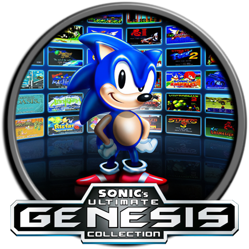

 Sega Genesis Collection
Details
 |
|
| Playtime | Not Played |
| Last Activity | Never |
| Added | 4/29/2025 5:00:18 |
| Modified | 4/29/2025 8:40:16 |
| Completion Status | Not Played |
| Library | Playnite |
| Source | |
| Platform | Sony PlayStation Portable |
| Release Date | 11/7/2006 |
| Community Score | 67 |
| Critic Score | 82 |
| User Score | |
| Genre | Various |
| Developer | Digital Eclipse |
| Publisher | SEGA |
| Feature | Multiplayer Single Player |
| Links | Wikipedia |
| Tag | |
Description
Sega Genesis Collection (Sega Mega Drive Collection in PAL regions) is a compilation of video games developed by Digital Eclipse and published by Sega for PlayStation 2 and PlayStation Portable. The collection includes twenty-eight Sega Genesis games from a variety of genres, as well as unlockable classic Sega arcade games, with different sets of arcade games for the PlayStation 2 and PlayStation Portable versions. A sequel was released in 2009 called Sonic's Ultimate Genesis Collection for PlayStation 3 and Xbox 360.
List of games
Sega Genesis
- Alex Kidd in the Enchanted Castle (1989)
- Altered Beast (1989)
- Bonanza Bros. (1991)
- Columns (1990)
- Comix Zone (1995)
- Decap Attack (1991)
- Ecco the Dolphin (1992)
- Ecco: The Tides of Time (1994)
- Ecco Jr. (1995) †
- Flicky (1991)
- Gain Ground (1991)
- Golden Axe (1989)
- Golden Axe II (1991)
- Golden Axe III (1993)
- Kid Chameleon (1992)
- Phantasy Star II (1989)
- Phantasy Star III: Generations of Doom (1990)
- Phantasy Star IV: The End of the Millennium (1993)
- Ristar (1995)
- Shadow Dancer: The Secret of Shinobi (1990) † / ††
- Shinobi III: Return of the Ninja Master (1993)
- Sonic the Hedgehog (1991)
- Sonic the Hedgehog 2 (1992)
- Super Thunder Blade (1988)
- Sword of Vermilion (1990) †
- Vectorman (1995)
- Vectorman 2 (1996)
- Virtua Fighter 2 (1996) †
† Not available in Sonic's Ultimate Genesis Collection. †† Not available in the PAL release.
This collection also features more than thirty-five minutes of unlockable interviews from Sega of Japan, a "museum" with facts about the games, strategy tips and box art for each game, as well as a "Sega Cheat Sheet" that consists of cheat codes for most games, and a set of unlockable arcade games, (some of which are from the early Sega/Gremlin era). The collection also contains unlockable trailers for Phantasy Star Universe and Virtua Fighter 5.
Reception
Sega Genesis Collection received "generally favorable" reviews, according to review aggregator Metacritic.